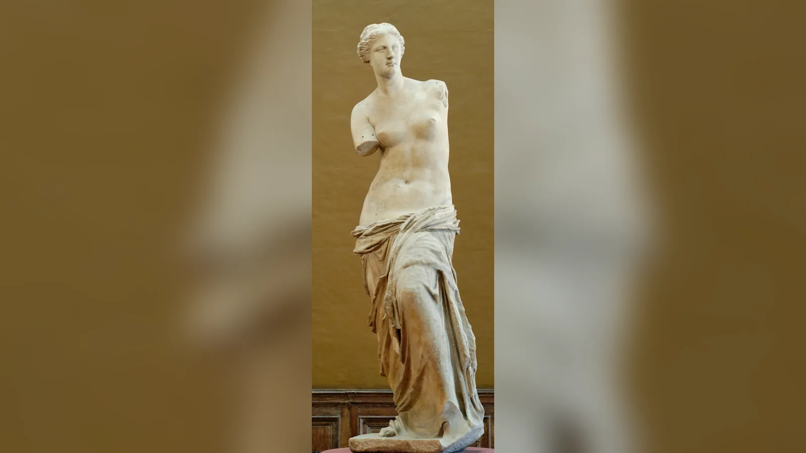
Afrodit, Yunan mitolojisinde aşkın, cinsel arzunun, çekiciliğin ve güzelliğin en güçlü tanrıçalarından biridir; Roma dünyasında büyük ölçüde Venüs ile özdeşleştirilmiştir. Fakat onu yalnızca “aşk ve güzellik tanrıçası” diye tanımlamak antik dünyadaki yerini daraltır. Afrodit evlilik ve üremeden deniz yolculuğuna, kent topluluğunun birliğinden hanedan soyuna kadar uzanan çok daha geniş bir alanda tapım görüyordu. Onun asıl gücü güzel görünmekten çok, tanrıları ve insanları birbirine yönelten arzuyu harekete geçirebilmesiydi.
Afrodit’in doğumu hakkında da tek bir antik anlatı yoktur. Hesiodos’un Theogonia’sında Zeus’tan daha eski bir kuşağa bağlanır ve Uranos’un denize düşen cinsel organlarının çevresinde oluşan köpükten doğar. Homeros’un İlyada’sında ise Zeus ile Dione’nin kızıdır. Bu iki soy ağacını birleştirerek “gerçek anne ve babası şunlardır” demek, antik Yunan mitlerinin nasıl işlediğini gözden kaçırır. Farklı şairler, bölgeler ve kült gelenekleri aynı tanrıça için farklı geçmişler anlatabiliyordu.
“Afrodit’in gerçek hikâyesi” tarihsel olarak yaşamış bir kadının biyografisi değildir. Afrodit’in gerçekten yaşamış olduğuna ilişkin kanıt yoktur; o, antik Yunan dininin tanrısal figürlerinden biridir. Buna karşılık onun adına yapılmış tapınaklar, adaklar, heykeller, yazıtlar ve antik metinler gerçektir. Afrodit’i anlamanın yolu, mitleri tek bir masala dönüştürmek yerine bu farklı kanıt katmanlarını yan yana okumaktır.
Bu katmanlar bir araya geldiğinde şaşırtıcı bir tanrıça ortaya çıkar. Homeros’un savaş alanında yaralanabilen Afrodit’i, Sappho’nun kişisel aşk acısında yardım istediği tanrıça, Sparta’nın “Areia” yani savaşçı Afrodit’i, denizcilerin güvenli yolculuk için yakardığı Afrodit Euploia ve Roma’nın imparatorluk soyunun atası hâline gelen Venus Genetrix aynı uzun geleneğin farklı yüzleridir. Modern kültür onun en görünür yüzünü, romantik aşk ve güzelliği seçmiştir; antik dünyanın Afrodit’i bundan çok daha karmaşıktır.
Afrodit Kimdir ve Ne Tanrıçasıdır?
Afrodit’in alanının merkezinde eros, yani kişiyi başka birine yönelten güçlü arzu bulunur. Antik Yunancada cinsel ilişki ve erotik hazla ilgili ifadelerin tanrıçanın adından türetilmesi tesadüf değildir. Homeros İlahileri’nde Afrodit’in gücü öylesine geniştir ki tanrılar ile ölümlülerin çoğunu birbirine âşık edebilir. Athena, Artemis ve Hestia ise bu etkinin dışında bırakılan önemli istisnalardır. Bu anlatı, Afrodit’in “güzel olan kişi” değil, başkalarının davranışını değiştirebilen bir kuvvet olarak düşünüldüğünü açıkça gösterir.
Bu güç evlilik ve üremeyle de bağlantılıydı. Antik toplumda arzu sadece bireysel bir duygu değildi; evliliklerin kurulması, çocukların doğması ve aile soyunun sürmesi toplumsal düzenin temel parçalarıydı. Afrodit bu nedenle gelinlerle, evlilik hazırlıklarıyla, süslenmeyle, kokularla ve bedensel çekicilikle ilişkilendirilebildi. Peitho, yani “ikna”, tanrıçanın çevresinde sık görülen kişileştirmelerden biridir. Arzu ile ikna arasındaki yakınlık, Afrodit’in alanının fiziksel güzellikten daha geniş olduğunu gösterir.
Tanrıçanın denizle bağı da doğum efsanesinden ibaret değildir. Pontia, Pelagia, Euploia ve Limenia gibi sıfatları onu deniz, liman ve güvenli seyirle ilişkilendirir. Kıbrıs ve Kythera gibi adalarla kurduğu eski bağ, liman kentlerindeki kültleri ve denizden yükselen Anadyomene tipi bu yönünü güçlendirdi. Denizciler açısından Afrodit, modern bir “romantik aşk tanrıçası” imgesinin açıklayamayacağı kadar pratik bir koruyucu olabiliyordu.
Afrodit’in siyasi ve askerî bağları daha da şaşırtıcıdır. Pandemos sıfatı bazı kentlerde topluluğun bütünlüğüyle ilişkilendirildi. Sparta’da Pausanias’ın kaydettiği Aphrodite Areia, doğrudan “Savaşçı Afrodit” anlamına gelir. Roma’da Venüs, Aeneas’ın annesi olarak Roma soyunun ve özellikle Julius Caesar’ın ailesinin ilahi atası hâline geldi. Böyle bakıldığında aşk, savaş ve siyaset birbirinden tamamen kopuk alanlar değildir: evlilik ittifak kurar, arzu hanedan yaratır, bir ilişki savaşı tetikleyebilir ve soy iddiası iktidarı meşrulaştırabilir.
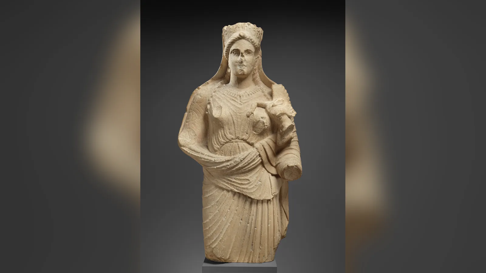
Afrodit Nasıl Doğdu? Hesiodos ve Homeros’un İki Farklı Anlatısı
Afrodit’in deniz köpüğünden doğduğu anlatı Hesiodos’un Theogonia’sındaki kozmogonik hikâyenin parçasıdır. Gaia’nın kışkırtmasıyla Kronos babası Uranos’u orakla hadım eder ve kopan organları denize atar. Denizin üzerinde beyaz bir köpük oluşur; tanrıça bu köpüğün içinden gelişir. Önce Kythera’ya yaklaşır, ardından Kıbrıs’a varır. Hesiodos onun adını da aphros, “köpük” sözcüğüyle ilişkilendirir.
Bu doğum sahnesi çoğu modern resimde sakin, zarif ve romantik görünür. Oysa Hesiodos’un bağlamı oldukça serttir. Afrodit’in ortaya çıkışı, göksel baba Uranos’a karşı uygulanan şiddetin ardından gerçekleşir. Arzu tanrıçası böylece kozmik bir iktidar çatışmasının sonucunda dünyaya gelir. Onun peşinden Eros ve Himeros’un gitmesi de cinsel çekim ile yaratıcı gücün kozmik düzen içindeki yerini vurgular.
Homeros geleneği farklıdır. İlyada’da Afrodit Zeus’un kızıdır; savaşta Diomedes tarafından yaralandığında annesi Dione’nin yanına gider. Burada Uranos’un organları, deniz köpüğü ve annesiz doğum yoktur. Afrodit Olimpos ailesinin daha tanıdık soy düzenine yerleştirilmiştir. Aynı tanrıçanın iki büyük erken şiir geleneğinde iki farklı soya sahip olması, “hangisi doğru?” sorusundan daha önemli bir şeyi gösterir: Yunan mitolojisi tek bir kutsal kitap tarafından standartlaştırılmış sistem değildi.
Platon’un Şölen’inde bu iki soy daha sonra felsefi bir ayrım için kullanılır. Diyalogdaki Pausanias, Uranos’tan annesiz doğan daha eski Afrodit’i Ourania; Zeus ile Dione’nin kızı olan genç Afrodit’i Pandemos olarak ayırır ve iki farklı aşk türü geliştirir. Fakat bu felsefi şemayı bütün Yunan dünyasındaki gerçek kült uygulamalarının değişmez açıklaması saymak hatalıdır. Ourania ve Pandemos gerçek kült sıfatlarıdır; Platon onların anlamlarını kendi tartışmasının hizmetinde yeniden yorumlar.
Homeros İlahisi 5 ise Afrodit’in gücünü başka bir açıdan işler. Tanrıça tanrıları ölümlülere âşık etmekle övündüğü için Zeus onu Troialı Anchises’e karşı arzuya sürükler. Afrodit ölümlü bir kadın görünümüne bürünür, Anchises’le birlikte olur ve Aeneas doğar. Böylece başkalarının arzusunu yöneten tanrıça kendi alanının etkisine maruz bırakılır. Bu hikâye Roma tarihi açısından sonradan olağanüstü önem kazanacaktır; çünkü Aeneas, Roma’nın efsanevi soy zincirinin merkezine yerleşir.
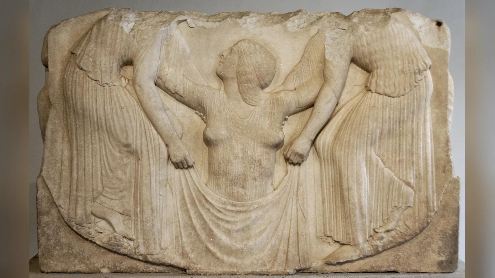
Afrodit’in annesi ve babası kimdir?
Sorunun tek cevabı yoktur. Hesiodos’a göre Afrodit’in annesi yoktur ve doğumu Uranos’un bedeninden kopan parçayla bağlantılıdır. Homeros’a göre ise babası Zeus, annesi Dione’dir. “Afrodit Zeus’un kızı mı?” sorusunun doğru kısa cevabı bu yüzden “Homeros geleneğinde evet; Hesiodos’ta hayır” olmalıdır. Mitolojik gelenekleri tek bir aile ağacına zorlamak, kaynakların gerçek farklılığını ortadan kaldırır.
Afrodit İsmi Ne Anlama Gelir?
Hesiodos tanrıçanın adını Yunanca aphros, yani “köpük” ile açıklar. Bu açıklama antik çağda etkili olmuş ve “köpükten doğan” Afrodit imgesini yüzyıllarca beslemiştir. Fakat modern dilbilim açısından “Afrodit” adının gerçekten aphros sözcüğünden türediği kesin değildir. Adın etimolojisi hâlâ tartışmalıdır.
Bazı araştırmacılar ismin Yunan dili içinde açıklanmasına çalışırken bazıları Doğu Akdeniz bağlantılı bir ödünçleme ihtimalini öne çıkarır. Yakın Doğu kökeni için sıkça başvurulan Astarte ve İştar paralellikleri, tanrıçanın kült özellikleri açısından önemlidir; fakat “Afrodit” adının belirli bir Sami sözcüğünden kesin biçimde türetildiğini gösteren üzerinde uzlaşılmış bir çözüm yoktur. Bu nedenle “Afrodit kelimesi kesin olarak deniz köpüğü demektir” ifadesi fazla iddialıdır.
Burada mit ile etimoloji birbirini beslemiş olabilir. Antik şair için adın aphros ile benzerliği, doğum hikâyesini anlamlı kılan şiirsel bir açıklamaydı. Modern dilbilim ise ses değişimleri ve karşılaştırmalı veriler arar. Bir antik etimolojinin kültürel açıdan çok önemli olması, dilbilimsel açıdan doğru olmak zorunda olduğu anlamına gelmez.
Afrodit Kültünün Kökenleri: Kıbrıs, Fenike ve Yakın Doğu Bağlantısı
Afrodit’in kökeni üzerine en önemli tartışmalardan biri tanrıçanın Yakın Doğu’nun İnanna ve İştar ile özellikle Fenikeli Astarte gelenekleriyle ilişkisidir. Benzerlikler gerçek ve dikkat çekicidir: cinsellik ve üreme, güçlü arzu, bazı geleneklerde savaşla bağ, yıldız/gezegen ilişkileri ve Doğu Akdeniz boyunca dolaşan kült biçimleri bunların arasındadır. Fakat bu benzerliklerden “Afrodit, Astarte’nin adı değiştirilmiş hâlidir” gibi basit bir denklem çıkarmak doğru değildir.
Kıbrıs bu dönüşümü anlamak için kilit noktadır. Ada Tunç Çağı’ndan itibaren Ege, Levant ve Anadolu arasında yoğun ticaret ve kültürel temas bölgesiydi. Fenikeliler MÖ 9. yüzyıl sonlarında Kition’da Astarte için anıtsal bir kült kurmuşlardı. Kıbrıs’ın yerel Büyük Tanrıça geleneği de Doğu Akdeniz ikonografisinden etkilenmişti. Metropolitan Museum of Art’ın Kıbrıs eserleri üzerine değerlendirmeleri, Astarte ile yerel tanrıça arasındaki görsel ve dinsel alışverişin daha sonra Afrodit kimliğiyle birleştiğini gösterir.
Kıbrıs’ın Paphos, Amathus, Kition ve Golgoi gibi merkezlerinde tanrıçaya tapım önemliydi. Yunan şairlerinin Afrodit’i “Kypris”, yani Kıbrıslı diye adlandırması da bu bağın erken tarihte yerleştiğini gösterir. Bununla birlikte adadaki tanrıça tasvirleri her zaman anakara Yunanistan’daki çıplak Afrodit tiplerine benzemez. Kıbrıs’ın yerel gelenekleri, Yunan ve Fenike unsurlarını kendi biçiminde birleştirdi.
Bu tablo, kültürlerin sınır çizgileri içinde kapalı sistemler olmadığını hatırlatır. Doğu Akdeniz’de denizciler, tüccarlar, göçmenler ve zanaatkârlar yalnız malları değil ritüelleri, imgeleri ve tanrı fikirlerini de taşıyordu. Afrodit’in ortaya çıkışında Yakın Doğu etkisinin güçlü olduğu görüşü modern araştırmada ciddi destek bulur; fakat tanrıçanın Yunan dünyasında aldığı biçim özgün bir yeniden yapılanmadır. İnanna, İştar, Astarte ve Afrodit arasında aktarım hatları aramak verimlidir; onları tek ve değişmez tanrıça ilan etmek değildir.
Afrodit’in Görevleri ve Güçleri: Aşktan Denize, Evlilikten Savaşa
Afrodit’in en belirgin gücü arzu yaratmaktır. Homeros İlahisi’nde tanrıların bile onun etkisinden kaçmakta zorlanması bu gücü kozmik ölçekte gösterir. İlyada’da Hera, Zeus’u baştan çıkarmak için Afrodit’in çekim gücüyle bağlantılı süslü kuşağını ödünç alır. Sappho ise ünlü Afrodit ilahisinde tanrıçayı savaş veya devlet için değil, karşılıksız aşkın yarattığı kişisel acı için çağırır. Aynı tanrısal güç hem epik düzenin hem bireysel duygunun içine girebilir.
Evlilikte Afrodit’in rolü Hera’nınkinden farklı ama tamamlayıcıydı. Hera evliliğin kurumsal ve meşru düzeniyle güçlü biçimde ilişkilendirilirken Afrodit eşleri birbirine yönelten çekim, cinsellik ve üreme boyutunda etkiliydi. Bu yüzden gelinlik hazırlığı, süslenme, parfüm, takı ve bedensel cazibe tanrıçanın görsel dünyasında önem kazandı.
Denizcilik sıfatları başka bir işlev alanı açar. Euploia güvenli seyirle, Pontia ve Pelagia denizle, Limenia limanla bağlantılıdır. Knidos gibi denizcilik açısından önemli bir kentte Afrodit kültünün büyük prestij kazanması tesadüf değildir. Denizden doğuş miti bu işlevi şiirsel olarak güçlendirmiş olabilir, fakat denizci Afrodit gerçek kült sıfatlarıyla da belgelenir.
Savaşçı Afrodit ise modern beklentileri en çok bozan örnektir. Sparta Akropolisi’nde Pausanias, Aphrodite Areia’ya ait bir tapınaktan söz eder; Areia açık biçimde Ares ve savaşla bağlantılıdır. Sparta’da silahlı Afrodit tasvirlerine ilişkin başka gelenekler de vardır. Bu durum “aşk ile savaş nasıl aynı tanrıçada birleşir?” sorusunu doğurur. Antik din açısından bu kadar keskin bir çelişki yoktur. Arzu rekabet, evlilik ittifakı, soy, fetih ve iktidarla kesişebilir; ayrıca Yakın Doğu’nun İştar/Astarte geleneklerinde cinsellik ile savaşın aynı tanrısal figürde birleşmesi tanıdık bir örüntüdür.
Buradan çıkarılabilecek makul sonuç, Afrodit’in “güzelliği yöneten” pasif bir figür olmadığıdır. Onun alanı insanları ve tanrıları birbirine bağlayan çekim gücüdür. Bağ kurmak düzen yaratabilir; aynı güç mevcut düzeni parçalayabilir. Paris ile Helena’nın birlikteliği bunun mitolojik ölçekte en ünlü örneğidir.
Afrodit Neden Hephaistos ile Evlendirildi?
Afrodit’in Hephaistos ile evliliği özellikle Homeros’un Odysseia’sındaki Demodokos şarkısıyla ünlüdür. Hikâyede Afrodit, zanaat ve ateş tanrısı Hephaistos’un eşidir; fakat Ares’le gizli ilişki yaşar. Güneş tanrısı Helios ilişkiyi görüp Hephaistos’a bildirir. Hephaistos görünmez ve kırılmaz bir ağ hazırlayarak iki sevgiliyi yatağında yakalar ve diğer tanrıları onları görmeye çağırır.
İnternette sıkça “Zeus, Afrodit’in güzelliği yüzünden tanrılar savaşmasın diye onu Hephaistos’la zorla evlendirdi” biçiminde bir açıklama dolaşır. Bu gerekçe Homeros’un anlatısında evliliğin kurulma sebebi olarak verilmez. Başka geç mitografik gelenekler evlilik konusunda farklı ayrıntılar üretir. Bu yüzden Hephaistos ile evliliğin nedenini tek bir kesin olayla açıklamak güvenli değildir.
Mitin daha sağlam tarafı karşıtlıkta yatar. Hephaistos teknik zekâ, zanaat ve üretim ustalığıyla; Ares doğrudan savaşçı güçle; Afrodit ise arzu ve çekimle bağlantılıdır. Hephaistos’un sevgilileri kas gücüyle değil yaptığı mekanik düzenekle yakalaması, onun tanrısal uzmanlığını sahnenin merkezine taşır. Afrodit’in arzusunun evlilik kurumunun sınırlarını aşması ise onun gücünün toplumsal düzen tarafından bütünüyle kontrol edilemediğini gösterir.
Afrodit ve Ares’in Hikâyesi Nedir?
Afrodit ile Ares’in ilişkisi aşk ile savaşın antik dünyadaki en kalıcı eşleşmelerinden biridir. Odysseia’daki yatak ağı hikâyesi ilişkinin en erken ayrıntılı anlatılarındandır. Daha sonraki sanat ve edebiyatta ikili sürekli yeniden üretilmiş, Roma dünyasında Venus ile Mars birlikteliği ayrıca siyasi anlam kazanmıştır.
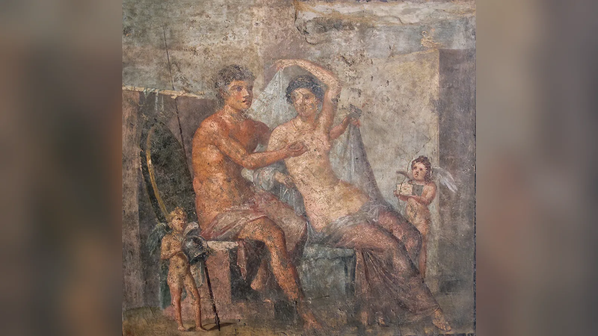
İlişkiden doğan çocuklar kaynaklara göre değişir. Phobos ve Deimos, yani Korku ve Dehşet, Ares’in savaş çevresinde yer alan figürlerdir; Harmonia ise Ares ile Afrodit’in kızı olarak savaş ile uyumun aynı birliktelikten çıkabileceğini gösteren çarpıcı bir mitolojik karşıtlık oluşturur. Eros’un Afrodit ile Ares’in oğlu sayıldığı gelenekler de vardır, fakat Eros’un soy ağacı tek değildir.
Ares-Afrodit birlikteliğini modern anlamda “yasak aşk skandalı”na indirgemek kolaydır; ancak mitolojik yapı daha zengindir. Arzu ile çatışma birbirinin zıttı olduğu kadar birbirini tetikleyen güçlerdir. Paris’in seçimi savaş doğurur; Helena’ya duyulan arzu orduları harekete geçirir; Roma’da Mars ile Venüs imgesi ise savaşçı güç ile soyun üretkenliğini birleştirebilir. Afrodit’in savaşla bağlantısının tesadüf olmadığını gösteren kült kanıtları da bu okumayı destekler.
Afrodit ve Adonis’in Trajik Hikâyesi
Adonis anlatısı, Afrodit’in ölümlü bir erkeğe duyduğu aşkın en ünlü örneğidir; ancak bugün bilinen ayrıntılar farklı dönemlerdeki kaynakların birleşimidir. Adonis’in doğumuyla ilgili geleneklerde annesi Smyrna veya Myrrha, babasına karşı yasak arzuya sürüklenir; olayların sonunda ağaca dönüşür ve Adonis ağaçtan doğar. Bu bölümün en ayrıntılı ve popüler biçimlerinden biri Roma şairi Ovidius’un Metamorfozlar’ında yer alır.
Afrodit bebeğin güzelliğinden etkilenir ve onu bir sandık içinde Persephone’ye emanet eder. Persephone de Adonis’ten vazgeçmek istemeyince iki tanrıça arasında paylaşım anlatıları ortaya çıkar. Farklı versiyonlarda yılın bölünmesi farklı oranlarda verilir. Bu nedenle “Adonis kesin olarak yılın altı ayını Afrodit, altı ayını Persephone ile geçirirdi” biçimindeki standart formül bütün kaynakları temsil etmez.
Adonis’in ölümü bir yaban domuzu saldırısıyla gerçekleşir. Bazı geç yorumlar domuzun arkasına Ares’i veya başka bir tanrısal cezayı yerleştirir; bunlar bütün geleneklerde ortak değildir. Afrodit’in yasının ritüel karşılığı Adonia festivalinde görülür. Atina’da kadınların hızlı büyüyüp hızla solan bitkileri kaplara ekmesi, genç Adonis’in kısa ömrüyle ilişkilendirilmiştir. Burada mit, sadece romantik trajedi olmaktan çıkar; geçicilik, cinsellik, ölüm ve yas ritüeliyle birleşir.
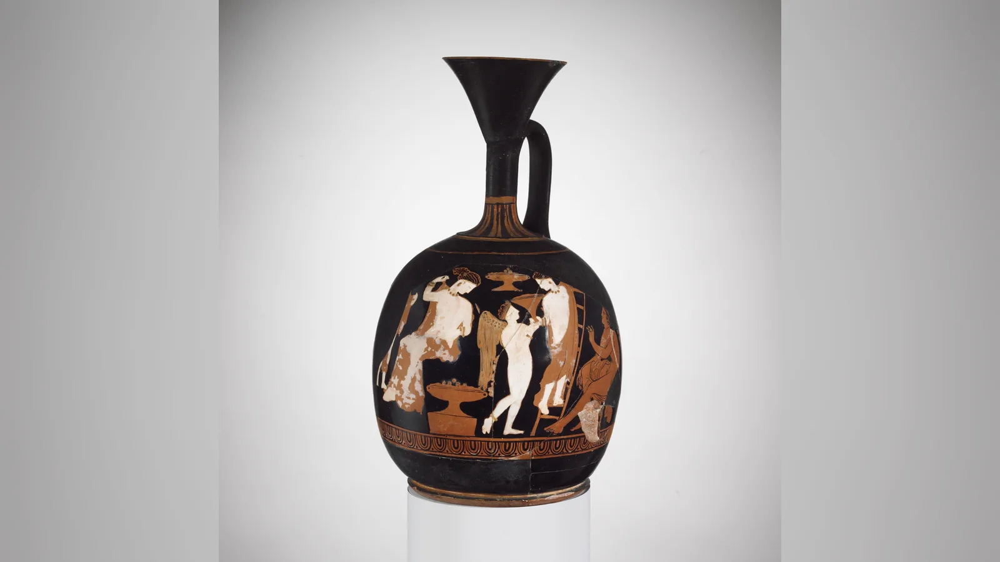
Afrodit’in Çocukları Kimlerdir?
Afrodit’in çocukları için tek ve değişmez liste yoktur. Aeneas, Homeros İlahisi geleneğinde Afrodit ile Troialı Anchises’in oğludur. Roma’nın kuruluş mitleri açısından bu çocuk daha sonra tanrıçanın bütün siyasi anlamını değiştirecek kadar önem kazanır.
Ares ile ilişkisinden Harmonia, Phobos ve Deimos gibi çocuklar sayılır. Harmonia, Thebai kralı Kadmos ile evlenir. Phobos ile Deimos ise savaş alanında babaları Ares’e eşlik eden korku ve dehşet kişileştirmeleridir. Bu soy ağacı, Afrodit’in arzu alanı ile Ares’in savaş alanını aynı aile içinde birleştirir.
Hermes ile birlikteliğinden Hermaphroditos’un doğduğu gelenek özellikle sonraki mitografide önemlidir. Priapos’un annesi olarak Afrodit’i gösteren kaynaklar bulunmakla birlikte babası konusunda farklı gelenekler vardır. İnternetteki uzun “Afrodit’in çocukları” listeleri hangi yazara dayandığı belirtilmeden kullanıldığında bu yüzden yanıltıcı olabilir.
Eros gerçekten Afrodit’in oğlu mudur?
Hem evet hem hayır; kaynak hangi Eros geleneğinin izlendiğine bağlıdır. Hesiodos’un Theogonia’sında Eros, Afrodit’ten önce var olan en eski kozmik güçlerden biridir. Yani bu anlatıda Afrodit’in oğlu olamaz. Buna karşılık daha sonraki edebiyat ve sanatta Eros giderek Afrodit’in oğlu ve yardımcısı olarak temsil edilir; bazı gelenekler babasını Ares sayar.
Bu değişim sanat tarihinde çok görünürdür. Klasik ve özellikle Helenistik dönemde küçük, kanatlı Eros’un Afrodit’in yanında çocuk figürü olarak gösterilmesi yaygınlaşır. Roma’nın Cupid’i de bu geleneği sürdürür. “Eros Afrodit’in oğludur” popüler kültürde doğru görünen bir cümledir, fakat en erken Yunan kozmogonisine uygulandığında yanlıştır.
Paris’in Yargısı ve Truva Savaşı’nda Afrodit’in Rolü
Paris’in Yargısı, Afrodit’in arzuyu siyasi felakete dönüştüren gücünü en açık biçimde gösteren anlatıdır. Peleus ile Thetis’in düğününe çağrılmayan Eris’in ortaya attığı “en güzele” ait altın elma Hera, Athena ve Afrodit arasında anlaşmazlık yaratır. Zeus seçimi yapmak istemez ve karar Troialı Paris’e bırakılır. Tanrıçaların her biri Paris’e farklı bir üstünlük vaat eder; Afrodit ona dünyanın en güzel kadınının sevgisini vaat eder. Paris elmayı Afrodit’e verir.
Bu anlatının ayrıntılı biçimi Homeros’un İlyada’sında baştan sona sahnelenmez. İlyada Paris’in kararına göndermede bulunur ve Afrodit’in Paris ile Helena’yı koruduğunu gösterir; “altın elma ve üç rüşvet” biçimindeki tam hikâye farklı epik ve sonraki mitografik geleneklerden gelişir. Bu ayrım önemlidir, çünkü “İlyada’da Paris üç tanrıçaya bakıp elmayı seçer” şeklindeki yaygın özet metnin kendisinde anlatılan bir sahne değildir.
Paris’in ödülü Helena’dır; fakat Helena Sparta kralı Menelaos’un eşidir. Paris’in Helena’yı Troia’ya götürmesi, Yunan ordusunun Troia’ya seferinin mitolojik nedenine dönüşür. Afrodit savaşta Troialıları, özellikle Paris ve Aeneas’ı korur. İlyada 3’te Menelaos Paris’i öldürmeye yaklaşınca Afrodit Paris’i savaş alanından kaçırır. Beşinci kitapta ise Aeneas’ı kurtarmaya çalışırken Diomedes tarafından elinden yaralanır.
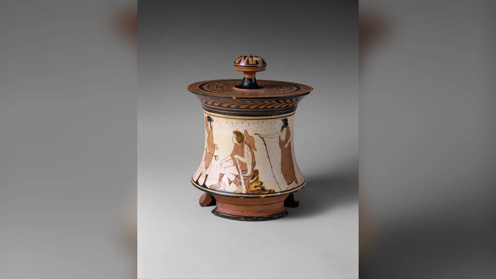
Afrodit’in burada “Truva Savaşı’nı başlatan tanrıça” diye tek başına suçlanması fazla basittir. Eris’in anlaşmazlığı, Paris’in seçimi, Helena’nın konumu, tanrıların rekabeti ve insan krallarının kararları aynı zincirin parçalarıdır. Buna rağmen Afrodit’in vaadi belirleyicidir. Kanıtlar birlikte düşünüldüğünde Paris’in Yargısı, güzelliğin kazandığı bir yarıştan çok arzunun siyasi düzeni değiştirebilme gücünü görünür kılan bir mit olarak okunabilir.
Afrodit’in Cezalandırdığı ve Koruduğu Kişiler
Afrodit mitlerde kendisine saygı gösterenleri koruyan, gücünü reddedenleri ise ağır sonuçlarla karşılaştırabilen tanrıçadır. Euripides’in Hippolytos tragedyası bunun en güçlü örneklerinden biridir. Hippolytos Artemis’e bağlıdır ve Afrodit’in alanını küçümser. Afrodit buna karşılık üvey annesi Phaidra’yı Hippolytos’a karşı yıkıcı bir arzuya sürükler. Sonuç Phaidra’nın ölümü ve Hippolytos’un babası Theseus tarafından lanetlenerek felakete sürüklenmesidir.
Hikâyenin amacı Afrodit’i basitçe “kıskanç ve kötü tanrıça” olarak göstermek değildir. Yunan tragedyasında bir tanrının alanını bütünüyle reddetmenin tehlikesi işlenir. Hippolytos’un Artemis’e bağlılığı tek başına suç değildir; insan hayatının cinsellik ve arzu boyutunu yok sayması dengeyi bozar. Euripides’in oyununda tanrısal güçler modern ahlaki karakterler gibi değil, insan yaşamının kaçınılmaz alanlarını temsil eden kuvvetler gibi çalışır.
Pygmalion anlatısında ise Afrodit olumlu taraftadır. Ovidius’un geç Roma anlatısında Kıbrıslı heykeltıraş Pygmalion kendi yaptığı kadın heykeline âşık olur ve Venüs heykeli canlandırır. Bu hikâye Yunan arkaik dininin doğrudan belgesi değildir; fakat Roma çağında Afrodit/Venüs’ün arzu ile yaratıcı sanat arasındaki ilişkisinin nasıl düşünülebildiğini gösterir.
Psykhe ile Afrodit Neden Karşı Karşıya Geldi?
Psykhe ile Afrodit’in ünlü çatışması erken Yunan epiklerinden değil, Roma İmparatorluk döneminde Apuleius’un MS 2. yüzyılda yazdığı Metamorfozlar ya da Altın Eşek içindeki uzun masaldan gelir. Bu kaynak farkı özellikle belirtilmelidir; Psykhe’yi Homeros döneminden beri anlatılan sabit bir Afrodit miti gibi göstermek yanlıştır.
Hikâyede Psykhe’nin olağanüstü güzelliği insanların dikkatini Afrodit’in kültünden uzaklaştıracak ölçüde büyür. Tanrıça Eros’a genç kadını aşağılayıcı bir aşka düşürmesini emreder; fakat Eros kendisi Psykhe’ye âşık olur. Uzun ayrılıkların ardından Psykhe, Afrodit’in verdiği son derece zor görevleri yerine getirmek zorunda kalır. Sonunda Zeus’un müdahalesiyle ölümsüzleşir ve Eros’la evlenir.
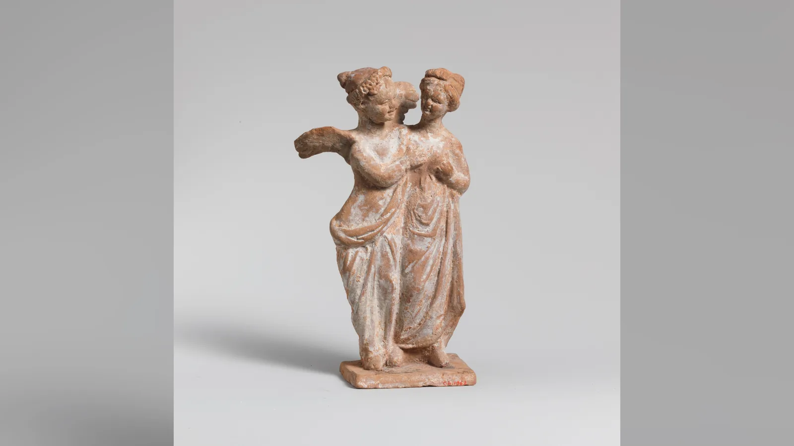
Apuleius’un anlatısı daha eski Eros ve Psykhe imgelerinden yararlansa da bugün bilinen ayrıntılı masalın temel edebî kaynağıdır. Afrodit burada rakip güzelliğe karşı öfkeli anne figürü olarak görünür. Fakat metnin bütünü dönüşüm, sınav, arzu ve ruhun olgunlaşması üzerine çok katmanlı bir anlatıdır. Modern “kötü kaynana Afrodit” özeti hikâyenin edebî bağlamını fazlasıyla küçültür.
Afrodit’in Sembolleri ve Kutsal Hayvanları Nelerdir?
Afrodit’in en tanınmış hayvanlarından biri güvercindir. Serçe, kuğu ve kaz da onun çevresinde görülebilir. Deniz bağlantısı nedeniyle deniz kabukları, özellikle daha sonraki sanat geleneğinde tanrıçanın en güçlü görsel işaretlerinden biri hâline gelmiştir. Botticelli’nin dev kabuğu antik bir “standart doğum sahnesinin” birebir kopyası değildir, fakat denizden doğan tanrıçanın Rönesans’taki en kalıcı simgesini yaratmıştır.
Mersin ağacı, gül ve çeşitli çiçekler tanrıçayla ilişkilendirilir. Takılar, aynalar, kokular ve süslenme araçları da onun kosmesis, yani süslenme ve bedensel düzenleme alanıyla bağlantılıdır. Elma ise Paris’in Yargısı nedeniyle sonraki ikonografide çok önemlidir; Venüs heykellerinde elma, tanrıçanın yarışmadaki zaferini tanımlayan bir işaret olabilir.
Afrodit’i gördüğümüz her çıplak kadın figürünü yalnız çıplaklığı nedeniyle tanrıça saymak doğru değildir. Arkeolog ve sanat tarihçileri kimliği duruş, buluntu bağlamı, eşlik eden Eros, yazıt, elma, deniz unsurları veya bilinen heykel tipleri gibi birden fazla göstergeden hareketle belirler. Milo Venüsü’nün kollarının kayıp olması nedeniyle ne tuttuğunun tartışılması bu sorunun ünlü örneğidir.
Afrodit Tapınakları ve Başlıca Kült Merkezleri
Kıbrıs’taki Palaipaphos/Paphos Afrodit kültünün en önemli merkezlerinden biriydi. Tanrıçanın “Paphia” ve “Kypris” sıfatları adanın onun kimliğindeki ağırlığını gösterir. Paphos’taki kült, daha sonraki Yunan ve Roma dünyasında tanrıçanın Kıbrıs’la özdeşleşmesini güçlendirdi. Amathus ve Kition gibi başka Kıbrıs merkezleri de tanrıça ve onun yerel/Doğu Akdeniz öncüllerinin kült tarihi açısından önemlidir.
Kythera, Hesiodos’un doğum yolculuğunda Afrodit’in uğradığı ada olarak görünür ve antik gelenekte eski kült merkezlerinden biri sayılır. Herodotos, Aphrodite Ourania kültünü Doğu Akdeniz bağlamında anlatırken Askalon ve Kıbrıs gibi merkezleri de birbirine bağlayan bir aktarım geleneğinden söz eder. Bu anlatıyı doğrudan tarihsel göç haritası saymak mümkün değildir, fakat antik insanların bile tanrıçanın doğu bağlantısının farkında olduğunu gösterir.
Korinthos, Afrodit kültüyle en çok anılan Yunan kentlerinden biridir. Akrokorinthos üzerindeki kutsal alan ve kentin liman-ticaret dünyası tanrıçanın ününü büyüttü. Antik coğrafyacı Strabon, tapınağa bağlı binden fazla hetaira bulunduğunu yazar. Bu iddia yüzyıllarca “tapınak fahişeliği”nin kesin kanıtı gibi tekrarlandı. Güncel araştırmada ise sayı, kurumun niteliği ve “kutsal fahişelik” kategorisinin kendisi ciddi biçimde tartışmalıdır. Arkeolojik alanın ölçüsü de bin kişilik sürekli bir tapınak kurumunu desteklememektedir.
Bu nedenle Korinthos için “Afrodit tapınağında bin rahibe fahişe çalışıyordu” cümlesini doğrulanmış gerçek gibi kullanmak güvenli değildir. Seks işçilerinin Afrodit kültüne adak sunmuş veya ritüellere katılmış olması mümkündür; bu, tapınağın kurumsal olarak cinsel hizmet işlettiğini kanıtlayan şey değildir. Antik kaynak ile modern yorum arasındaki fark burada özellikle önemlidir.
Knidos ise kült kadar sanat tarihiyle ünlüdür. Praxiteles’in MÖ 4. yüzyılda yaptığı Knidos Afroditi, tanrıçayı büyük ölçekli bağımsız heykelde tamamen çıplak gösteren en ünlü erken örnek oldu. Özgün heykel günümüze ulaşmadı; Roma kopyaları, küçük bronzlar, sikkeler ve antik yazarların tasvirleri görünümü hakkında fikir verir. Heykelin farklı açılardan görülebildiğine ilişkin gelenek, onun bedenini izleyicinin dolaşımına açan yenilikçi etkisini daha da büyüttü.
Afrodit’in Az Bilinen Sıfatları: Ourania, Pandemos, Areia ve Denizci Afrodit
Yunan tanrıları tek bir görev tanımıyla sınırlı değildi. Kült sıfatları bir tanrının belirli kentte, ritüelde veya ihtiyaçta hangi yönüyle çağrıldığını gösterebilirdi. Afrodit’in sıfatları bu çeşitliliğin en iyi örneklerinden biridir.
Ourania “Göksel” anlamına gelir. Pandemos ise kelime olarak “bütün halka ait” veya “tüm halkın” anlam alanına sahiptir. Platon’un Şölen’inde Ourania daha yüce, Pandemos daha sıradan ve bedensel aşk biçimleriyle ilişkilendirilir. Ancak modern kült tarihi çalışmaları bu felsefi karşıtlığın gerçek tapımlara mekanik biçimde uygulanamayacağını gösterir. Pandemos bazı bağlamlarda kent topluluğunu birleştiren tanrıça olarak siyasi ve toplumsal anlam taşıyabilir.
Areia, “Ares’e ait/savaşçı” anlam alanıyla Afrodit’in savaş yönünü görünür kılar. Pausanias Sparta’da Aphrodite Areia tapınağını ve başka bir yerde silahlı Afrodit imgesini kaydeder. Bu kanıt, savaşçı Afrodit’in modern internet uydurması olmadığını gösterir. Yine de bütün Yunan dünyasında Afrodit’in temel biçiminin silahlı olduğu sonucuna varılamaz; bu, özellikle bazı yerel kültlerde belirginleşen bir yönüdür.
Euploia güvenli deniz yolculuğuyla, Pontia ve Pelagia denizle, Limenia limanla bağlantılıdır. Kallipygos ise kelime anlamıyla “güzel kalçalı” gibi dikkat çekici bir sıfattır ve özellikle Roma dönemindeki heykel tipiyle ün kazanmıştır. Bu adlar, “Afrodit = romantik aşk” denkliğinin antik kültün zenginliğini ne kadar azalttığını gösterir.
Afrodit ile Venüs Aynı Tanrıça mı?
Kısa cevap, Roma dünyasında büyük ölçüde özdeşleştirildikleri; fakat tarihsel olarak başlangıçtan beri tamamen aynı tanrıça olmadıklarıdır. Venus İtalik/Roma dinsel geleneğinin bir tanrısıydı ve zaman içinde Yunan Afrodit’inin mitleri, ikonografisi ve işlevleriyle güçlü biçimde birleşti. Roma sanatı bu nedenle Yunan Afrodit heykel tiplerini Venüs adıyla sayısız kez kopyaladı.
Roma’daki dönüşüm yalnız isim değişikliği değildi. Afrodit’in Troialı Anchises’ten doğan oğlu Aeneas, Roma’nın köken anlatısında merkezi kahramana dönüştü. Böylece Venüs, Roma halkının mitolojik atası olarak yeni siyasi ağırlık kazandı. Julius Caesar kendi gens Iulia ailesini Aeneas’ın oğlu Iulus/Ascanius üzerinden Venüs’e bağladı ve Venus Genetrix, “Soyun Anası Venüs” kültünü öne çıkardı.
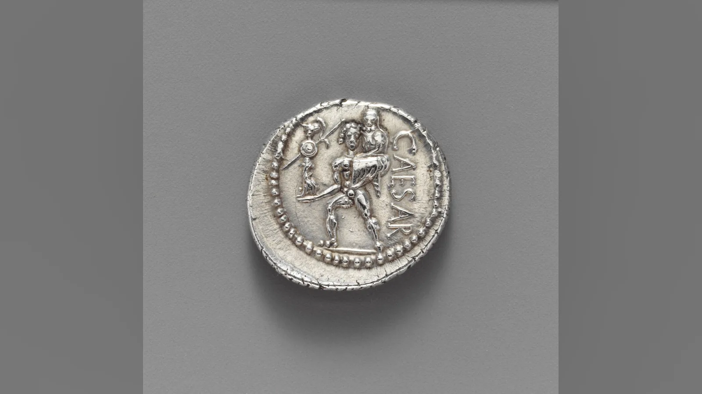
Bu dönüşüm, Afrodit’in iktidarla ilişkisinin en açık örneklerinden biridir. Yunan mitindeki ölümlü sevgili Anchises ve oğlu Aeneas, Roma’da hükümdarlık soyunun ilahi meşruiyet zincirine dönüştü. Arzu tanrıçası artık sadece sevgilileri birleştirmiyor; Roma’nın geçmişini ve yönetici ailenin kökenini açıklıyordu.
Venüs gezegeninin adı ve Batı dillerindeki cuma günü bağlantıları da bu Roma mirasının sonraki yaşamına aittir. Latince dies Veneris, “Venüs’ün günü”, Fransızca vendredi ve İtalyanca venerdì gibi adlarda yaşamaya devam eder. İngilizce Friday ve Almanca Freitag ise doğrudan Venüs adından değil, Roma tanrıçasıyla eşleştirilen Germen geleneğinden gelir. Bu yüzden “cuma kelimesi Afrodit’ten gelir” gibi evrensel bir ifade doğru değildir.
Antik Heykellerden Rönesans Tablolarına Afrodit
Afrodit’in sanat tarihindeki dönüşümü, tanrıçanın nasıl algılandığını anlamak için mitler kadar önemlidir. Arkaik ve erken Klasik dönemde tanrıça çoğunlukla giyinik gösterilir. Tanımlama bazen yazıtlara, eşlik eden figürlere veya sahnenin bağlamına bağlıdır. Bugün Afrodit denildiğinde akla gelen tamamen çıplak ideal kadın bedeni, Yunan sanatının başlangıcından beri değişmeden var olan bir standart değildir.
MÖ 4. yüzyılda Praxiteles’in Knidos için yaptığı ünlü Afrodit heykeli büyük kırılmadır. Antik anlatıya göre heykeltıraş biri giyinik, diğeri çıplak iki Afrodit hazırlamış; Kos giyinik olanı, Knidos ise çıplak olanı seçmiştir. Plinius daha sonra Knidos heykelini Praxiteles’in ve hatta dünyanın en büyük eserlerinden biri olarak över. Özgün heykel kayıptır, ancak Roma kopyaları onun banyoya hazırlanırken veya banyodan sonra giysisini bir kaba bırakan çıplak tanrıça tipini sürdürür.
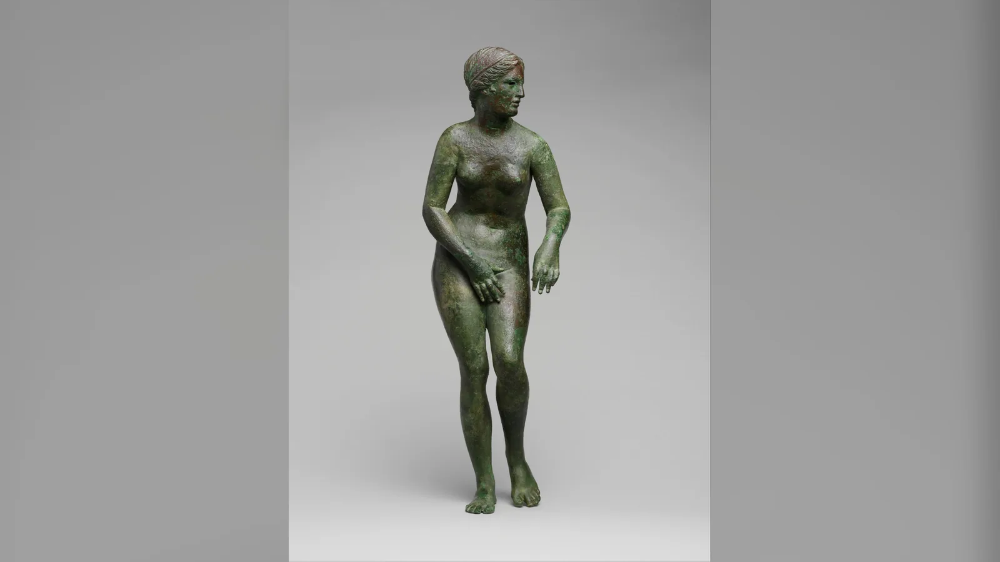
Knidos tipi daha sonraki Afrodit/Venüs heykellerinde çıplaklığı hem örten hem vurgulayan “pudica” duruşunun gelişimine zemin hazırladı. Kapitolin Venüsü ve Medici Venüsü gibi tiplerde tanrıça elleriyle göğsünü ve genital bölgesini kapatır. Bu jest modern göz için sadece mahcubiyet gibi okunabilir; fakat görsel olarak kapatılan bölgelere dikkati de yoğunlaştırır. Helenistik ve Roma sanatında Afrodit’in bedeni sanatçılara hareket, yüzey, ideal güzellik ve izleyici bakışı üzerine çalışabilecekleri güçlü bir model sağladı.
Milo Venüsü bu uzun geleneğin en ünlü eserlerinden biridir. MÖ 2. yüzyıl sonlarına tarihlenen heykel 1820’de Melos/Milos adasında bulundu ve 1821’de Louvre’a girdi. Yaygın biçimde Afrodit olarak tanımlanır; fakat kolları kayıp olduğu için başlangıçta hangi nesneleri tuttuğu kesin değildir. Yakınında bulunan bir el ve elma parçası, Paris’in Yargısı’ndaki “en güzele” verilen elmayla bağlantılı Afrodit yorumunu destekleyebilir; başka rekonstrüksiyonlar bir kalkan ihtimalini de tartışır. Dolayısıyla “Milo Venüsü kesin olarak şu hareketi yapıyordu” demek doğru değildir.
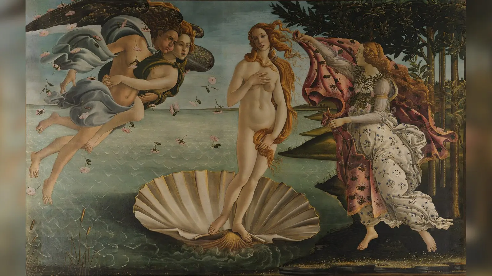
Delos’tan bulunan Afrodit, Pan ve Eros heykel grubu ise tanrıçanın Helenistik sanattaki daha oyunlu ve bedensel dünyasını gösterir. Pan cinsel yaklaşımda bulunurken Afrodit bir eliyle bedenini korur, diğer elindeki sandaleti ona doğru kaldırır; Eros araya girer. Yaklaşık MÖ 100 tarihli grup, çıplak Afrodit tipini mizah, erotizm ve hareketle birleştirir. Eserin üzerindeki adak yazıtı onun sadece dekoratif erotik heykel olmadığını, dinsel bağlamı bulunan bir adak olduğunu hatırlatır.
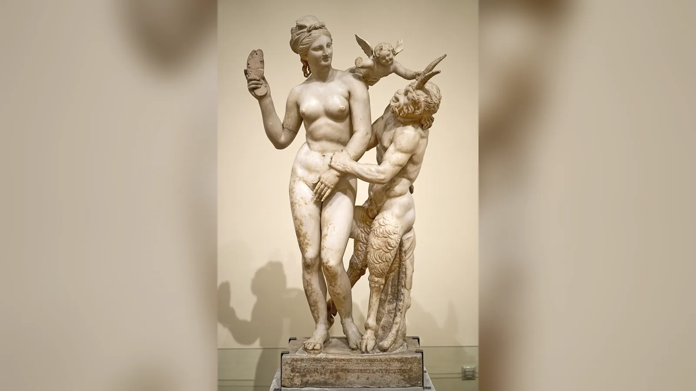
Rönesans’ta antik Venüs yeniden yorumlandığında en kalıcı imgeyi Sandro Botticelli yarattı. Yaklaşık 1485 tarihli Venüs’ün Doğuşu, adının düşündürdüğü gibi doğum anını değil, Uffizi’nin de belirttiği üzere denizden gelen tanrıçanın Kıbrıs kıyısına varışını gösterir. Venüs dev bir deniz kabuğunun üzerinde durur; rüzgârlar onu kıyıya taşırken bir kadın figürü örtü uzatır. Botticelli’nin Venüs’ü antik pudica heykel tiplerinin duruşundan yararlanır.
Tablo Hesiodos’un denizden doğan tanrıça geleneğiyle bağlantılıdır, fakat Theogonia’nın resimli kopyası değildir. Hesiodos’taki Uranos’un hadım edilmesi ve kozmik şiddet sahnesi resimde yoktur; Rönesans şiiri, antik heykel geleneği ve dönemin güzellik anlayışı yeni bir Venüs yaratır. Bugün birçok insanın “Afrodit nasıl görünüyordu?” sorusuna zihninde Botticelli’nin figürüyle cevap vermesi, antik tanrıçanın modern algısının ne kadar büyük ölçüde sonraki sanat tarafından biçimlendirildiğini gösterir.
2026’da Oxford Üniversitesi Ashmolean Müzesi’nde açılan Aphrodite: The Making of a Goddess sergisi de bu uzun dönüşümü merkeze aldı. Sergi, tanrıçayı yalnız Klasik sanatın çıplak güzellik figürü olarak sunmak yerine Kıbrıs’taki güçlü yerel tanrıça kimliğinden Yunan Afrodit’ine, Roma Venüs’üne ve modern kültürdeki güzellik ikonuna uzanan değişimleri birlikte değerlendirdi. Bu yaklaşım, güncel araştırmanın Afrodit için tek bir köken ya da değişmez bir görünüm aramak yerine farklı dönemlerde yeniden kurulan kimliklere odaklandığını gösterir.
Afrodit’in Görünüşü Antik Kaynaklarda Nasıl Anlatılır?
Antik edebiyat Afrodit’i altınla, güzel giysilerle, kokuyla, gülümsemeyle ve karşı konulmaz çekicilikle ilişkilendirir; fakat modern karakter tasarımındaki gibi sabit saç, göz ve ten rengi veren tek bir “resmî görünüş” yoktur. Homeros şiirinde “altın Afrodit” gibi sıfatlar onun ihtişamını vurgular. Homeros İlahileri tanrıçanın süslenmesini, takılarını ve kokulu giysilerini ayrıntılandırabilir.
Sanat da tek bir yüz standardı sunmaz. Arkaik giyinik tanrıça, Klasik Knidos tipi, Helenistik Anadyomene, Kapitolin ve Medici tipleri birbirinden farklıdır. Antik sanatçıların amacı tarihsel bir kadının portresini kopyalamak değildi. Bir heykelin Afrodit kimliği çoğu zaman ideal kadın bedeni, belirli duruş, Eros gibi eşlikçiler veya kült bağlamıyla kuruluyordu.
Bu nedenle internette dolaşan “Afrodit sarışındı, mavi gözlüydü ve boyu şuydu” türü kesin fiziksel biyografiler antik kaynakların desteklediği bilgiler değildir. Botticelli’nin sarışın Venüs’ü de MÖ 8. yüzyıl Yunanlarının tanrıçaya ait fotoğrafik hafızası değil, XV. yüzyıl Floransa sanatının antik temayı yeniden yaratmasıdır.
Afrodit İyi mi Kötü mü?
Antik bir tanrıçayı modern kişilik testindeki gibi “iyi” veya “kötü” sınıfına yerleştirmek yanıltıcıdır. Afrodit birleşme, haz, üreme ve çekim sağlayabilir; aynı güç kıskançlık, takıntı, ihanet ve savaş üretebilir. Bu ikilik onun karakterindeki tutarsızlık değil, temsil ettiği alanın antik düşüncedeki tehlikeli gücüdür.
Sappho yardım için ona seslenir; Pygmalion geleneğinde arzuya karşılık verir; Paris’i ve Aeneas’ı korur. Öte yandan Hippolytos’un reddi felaket getirir, Psykhe’ye ağır görevler verir ve bazı mitlerde insanları yasak arzulara sürükler. Tanrıçanın davranışları her metnin kendi amacı içinde değerlendirilmelidir. Euripides tragedyasının Afrodit’i ile bir düğün kültündeki Afrodit aynı işlevi taşımak zorunda değildir.
Bu çeşitlilik, Yunan tanrılarının ahlaki örnek kişiler olarak tasarlanmadığını da gösterir. Tanrılar insan yaşamının güçlü alanlarını kişileştirir ve yönetir. Deniz Poseidon yüzünden hem yol hem felaket olabilir; savaş Athena veya Ares aracılığıyla hem zafer hem ölüm getirir. Afrodit’in arzusu da hayatın sürmesini sağlayan ve aynı anda düzeni bozabilen bir kuvvettir.
Afrodit’in Gerçek Hikâyesi Bize Ne Anlatıyor?
Afrodit’in bütün anlatıları birlikte okunduğunda merkezde güzellikten daha temel bir kavram belirir: insanları ve tanrıları birbirine doğru hareket ettiren arzu. Güzellik bu gücün araçlarından biridir; fakat tanrıçanın alanının tamamı değildir. Onun yanında Eros, Himeros ve Peitho gibi figürlerin bulunması tesadüf değildir. Arzu doğar, özlem yaratır ve ikna yoluyla ilişkiye dönüşür.
Bu açıdan Afrodit, Olimpos düzeni için hem gerekli hem tehlikelidir. Onsuz cinsel birleşme, evlilik ve soyun devamı düşünülemez; fakat onun gücü mevcut evlilikleri, siyasi ittifakları ve hatta tanrıların kararlarını bozabilir. Paris’in Yargısı bu gerilimi dev ölçekte sahneler. Paris’in seçimi bireysel bir arzu vaadiyle başlar, fakat sonucu kralların, orduların ve kentlerin kaderini değiştirir.
Afrodit’in savaşla ilişkisi de bu çerçevede daha anlaşılır hâle gelir. Ares’le aşkı, Sparta’daki Areia kültü ve Roma’da Mars-Venüs birlikteliği, aşk ile savaşın basit zıtlıklar olmadığını gösterir. Antik toplumda evlilik hanedan kurabilir, soy iktidar yaratabilir, bir kadının evliliği devletler arası ittifakı değiştirebilir ve arzu çatışma nedeni olabilir. Afrodit’in alanı özel hayat ile siyasetin kesiştiği noktaya kadar uzanır.
Kıbrıs ve Yakın Doğu bağlantısı ise tanrıçanın kimliğinin kültürel alışveriş içinde oluştuğunu düşündürür. Astarte, İştar ve daha eski İnanna gelenekleriyle paralellikler, Doğu Akdeniz’de tanrı fikirlerinin toplumlar arasında dolaşabildiğini gösterir. Yine de Afrodit bu geleneklerin basit kopyası değildir. Yunan şiiri, yerel kültler ve sanat onu kendi bağlamlarında yeniden biçimlendirmiştir.
Roma bu dönüşümü bir kez daha yapar. Afrodit, Venüs olduğunda sadece Yunan aşk tanrıçasının Latince adı hâline gelmez; Aeneas’ın annesi ve Roma’nın soy atası olarak siyasi kimlik kazanır. Julius Caesar’ın Venus Genetrix’i, mitolojik anneliği iktidar diline çevirir. Bir tanrıçanın anlamı, ona tapan toplum değiştikçe yeniden kurulabilir.
Modern çağ ise başka bir seçim yaptı. Knidos’un çıplak Afroditi, Milo Venüsü ve özellikle Botticelli’nin Venüs’ü, tanrıçayı Batı sanatında ideal güzelliğin simgesine dönüştürdü. Reklam, moda ve popüler kültür bu imgeyi daha da sadeleştirdi. Denizcilerin Afrodit’i, kent topluluğunun Pandemos’u, Sparta’nın Areia’sı ve Roma soyunun Genetrix’i geri planda kalırken “güzellik ve romantik aşk” öne çıktı.
Afrodit’in gerçek hikâyesi bu nedenle tek bir aşk macerası değildir. Hesiodos’un kozmik deniz köpüğü, Homeros’un Zeus ile Dione’nin kızı, Sappho’nun yakardığı tanrıça, Knidos’un çıplak kült heykeli, Kıbrıs’ın Doğu Akdeniz bağlantıları, Paris’in yıkıcı vaadi ve Roma’nın soy anası aynı figürün yüzyıllar boyunca değişen anlamlarını oluşturur. Tanrıçanın kalıcılığının nedeni belki de tam burada aranmalıdır: Afrodit, insanların kontrol etmek istediği ama hiçbir zaman bütünüyle kontrol edemediği arzunun adıdır.
Sıkça Sorulan Sorular
Afrodit kimdir?
Afrodit, antik Yunan dininde aşk, cinsel arzu, çekicilik ve güzellikle bağlantılı tanrıçadır. Bunun yanında evlilik, üreme, denizcilik, toplumsal birlik ve bazı yerel kültlerde savaşla ilişkilendirilmiştir.
Afrodit ne tanrıçasıdır?
En kısa tanımıyla aşk ve arzu tanrıçasıdır. Antik kültlerde cinsel çekim, üreme, evlilik, süslenme, ikna, güvenli deniz yolculuğu ve bazı kentlerde siyasi birlik de onun alanına girebilir.
Afrodit nasıl doğmuştur?
Hesiodos’ta Uranos’un denize düşen organlarının çevresindeki köpükten doğar. Homeros geleneğinde ise Zeus ile Dione’nin kızıdır. Bunlar iki farklı antik gelenektir.
Afrodit’in annesi ve babası kimdir?
Hesiodos’a göre annesi yoktur ve doğumu Uranos’la bağlantılıdır. İlyada’da babası Zeus, annesi Dione’dir.
Afrodit kiminle evlidir ve kimi sevmiştir?
Odysseia’da Hephaistos’un eşidir ve Ares’le ilişki yaşar. Anchises’ten Aeneas’ı doğurur; Adonis’le aşkı da sonraki gelenekte önemlidir.
Afrodit’in çocukları kimlerdir?
Aeneas, Harmonia, Phobos ve Deimos önemli örneklerdir. Eros daha sonraki geleneklerde oğlu sayılır; Hesiodos’ta ise Afrodit’ten önce var olan kozmik güçtür.
Afrodit ile Venüs aynı tanrıça mıdır?
Roma döneminde büyük ölçüde özdeşleştirilmişlerdir; ancak kökenleri tamamen aynı değildir. Venüs, Aeneas ve Roma soyuyla bağlantısı sayesinde ayrıca güçlü siyasi anlam kazanmıştır.
Afrodit’in sembolleri nelerdir?
Güvercin, serçe, kuğu, kaz, mersin, gül, elma, deniz kabuğu, ayna, takılar ve kokular tanrıçayla ilişkilendirilebilir.
Afrodit Truva Savaşı’nı neden başlattı?
Savaşı tek başına başlatmadı. Paris’in Yargısı’nda Paris’e Helena’nın sevgisini vaat etmesi, Helena’nın Troia’ya götürülmesiyle sonuçlanan mitolojik zincirin önemli halkasıdır.
Afrodit gerçekten yaşamış mıdır?
Tarihsel olarak yaşamış bir kadın olduğuna dair kanıt yoktur. Afrodit antik Yunan dininin tanrıçasıdır; tapınakları, adakları, heykelleri ve onu anlatan metinler ise tarihsel kanıtlardır.
Kaynakça
Hesiodos, Theogonia, 176–206.
Homeros, İlyada, özellikle 3. ve 5. kitaplar.
Homeros, Odysseia, 8. kitap.
Homeros İlahileri, 5 ve 6.
Sappho, Fragman 1, Afrodit’e İlahi.
Euripides, Hippolytos.
Platon, Şölen, 180d–181.
Pausanias, Yunanistan’ın Tasviri, özellikle 3.15–18.
Apuleius, Metamorfozlar, 4.28–6.24.
Ovidius, Metamorfozlar.
Monica S. Cyrino, “Aphrodite”, Oxford Classical Dictionary / Oxford Research Encyclopedia, güncellenmiş sürüm 2025. https://academic.oup.com/edited-volume/61673/chapter-abstract/552822578
Monica S. Cyrino, “Aphrodite”, Oxford Bibliographies in Classics. https://academic.oup.com/reference/62365/reference-article-abstract/554607906
Vinciane Pirenne-Delforge, “Épithètes cultuelles et interprétation philosophique. À propos d’Aphrodite Ourania et Pandemos à Athènes”, L’Antiquité Classique 57 (1988), 142–157. https://doi.org/10.3406/antiq.1988.2232
Megan J. Daniels, “Aphrodite Pandemos at Naukratis Revisited”, Journal of Greek Archaeology 3 (2018), 165–203. https://doi.org/10.32028/jga.v3i.527
Stephanie Lynn Budin, The Myth of Sacred Prostitution in Antiquity, Cambridge University Press, 2008.
Metropolitan Museum of Art, “Classical Cyprus (ca. 480–ca. 310 B.C.).” https://www.metmuseum.org/essays/classical-cyprus-ca-480-ca-310-b-c
J. Paul Getty Museum, Aphrodite and the Gods of Love. https://www.getty.edu/art/exhibitions/aphrodite/
National Archaeological Museum, Athens, Hellenistic Collection. https://www.namuseum.gr/en/collection/ellinistiki-periodos-2/
Louvre Museum, “Aphrodite, known as the Venus de Milo.” https://www.louvre.fr/en/explore/visitor-trails/the-louvre-s-masterpieces/a-welcome-newcomer-to-the-louvre
Uffizi Galleries, “The Birth of Venus by Botticelli.” https://www.uffizi.it/en/artworks/birth-of-venus
Oxford Üniversitesi ve Ashmolean Museum, Aphrodite: The Making of a Goddess, 23 Ekim 2026. https://www.ox.ac.uk/news/2026-10-22-aphrodite-revealed-major-new-exhibition-opens-at-the-ashmolean